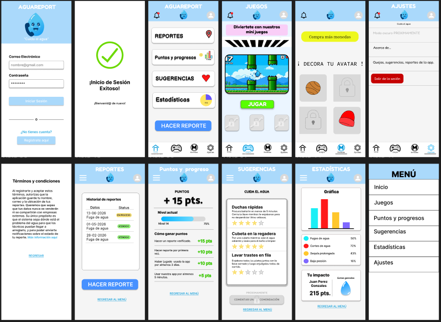

UTL
2025 – Actualidad
Desarrollo de Software Multiplataforma.
PORTAFOLIO PERSONAL
Estudiante de "Desarrollo de Software Multiplataforma" con interés en tecnología, desarrollo web y aprendizaje continuo.
01 / PERFIL
Estudiante de Desarrollo de Software Multiplataforma en cuarto cuatrimestre, motivado por la tecnología y la creación de soluciones digitales. Me considero una persona sumamente organizada, disciplinada y responsable, con un fuerte compromiso con mis tareas y proyectos. Cuento con experiencia laboral previa en atención y servicio, lo que ha fortalecido mi ética de trabajo. Busco oportunidades profesionales orientadas a bases de datos y desarrollo de software donde pueda aportar mi dedicación, aprender continuamente y colaborar en equipo.
02 / FORMACIÓN
2025 – Actualidad
Desarrollo de Software Multiplataforma.
2022
Certificado oficial que acredita la conclusión satisfactoria del nivel medio superior (preparatoria).
2023
Estudios iniciales enfocados en el área de la salud, ciencias biológicas y atención al paciente, cursados de forma parcial y concluidos por motivos económicos.
03 / EXPERIENCIA
Huacamayas "Las Autenticas" · 2023
Apoyo en la atención al cliente, organización del área de trabajo, control de insumos y soporte en tareas operativas diarias del local, fortaleciendo la responsabilidad y el compromiso laboral.
2026
Creación de sistemas lógicos interactivos mediante scripts, incluyendo una ruleta automatizada para la asignación dinámica de roles y permisos. Ejecución de pruebas de validación con resultados exitosos para garantizar el funcionamiento esperado del sistema.
Abril - Agosto 2026
Desarrollo de proyectos académicos prácticos aplicando lenguajes como Java, bases de datos MySQL y diseño en Figma, enfocados en la solución de problemas del cuidado del agua y la estructura lógica organizada.
04 / CAPACIDADES
05 / PORTAFOLIO

Desarrollo integral de una aplicación web para optimizar el reporte ciudadano de fugas de agua y fomentar la conciencia ambiental. El proyecto abarcó el diseño de interfaces y prototipos interactivos en Figma, la implementación de una base de datos relacional en MySQL, y la programación lógica en Visual Studio Code mediante HTML, CSS y JavaScript, incorporando un sistema de gamificación con un minijuego estilo Flappy Bird para otorgar recompensas virtuales.
En este momento no tengo video. Tampoco tengo un audio disponible.
Audio de bienvenida generado para este proyecto.
06 / PRESENCIA DIGITAL
07 / CONTACTO
Si deseas comunicarte conmigo, puedes utilizar el siguiente formulario.